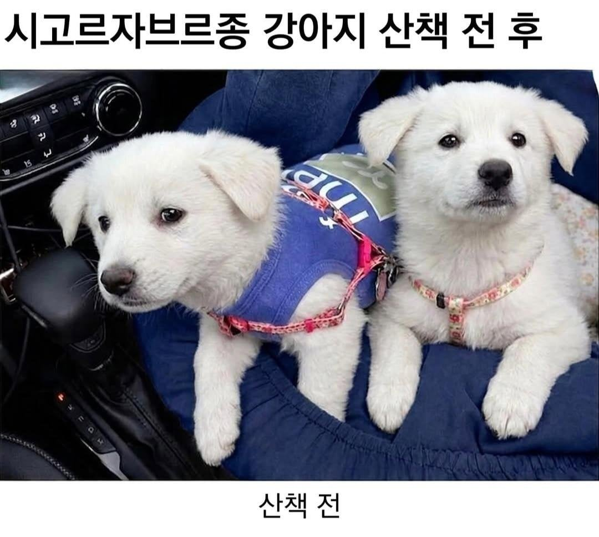
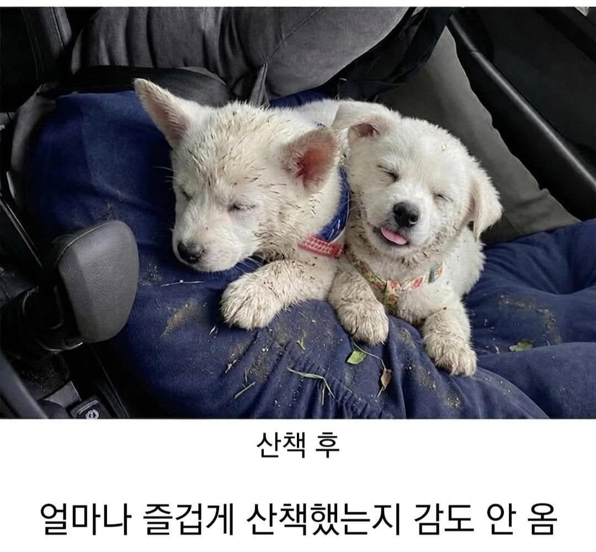

착한 댓글과 그렇지 못한 닉넴 ㄷㄷ
저러고 털 헤집어서 빈대 잡아줘야 함
왤케 구도나 색감이 AI같지
맞으니까
기어봉 옆에 있는 글자들 깨진거 보면 AI 맞는듯
저거 원본이있는걸 강아지 품종만 ai로 바꾼거임 왜저러는지는 모르겠다
개키우는거 빡세긴 할듯
매일 산책시키고 씻기고 차에태우면 밑에 깐것도 세탁하고 병원 주기적으로 가고 교육도 시켜야되고
운동된다
밑에 낀거는 그냥 탈탈 털면 됨
귀가 펴졌네 얼마나 잘놀았으면
털속 진드기 잘잡아야됨
개 몸에 묻은거 털지도 않고 차에 태울리가없잖아
Ai임
쇠맛이 나는구나
근데 저상태로 개를 차에 태움?
좀 털어주고 태우지 않나
이젠 구분이 쉽지 않아서 존나 자세히 봐야 함 ㄷㄷ
이게 산책이야 난봉이야 ㅋㅋㅋㅋ
아고 귀여워라 ㅠㅠ
어디 밭일 다녀왔나 ㅋㅋㅋㅋ
귀여운데 난 절대 감당 못 하겠다
발전이 놀랍군
꼬질꼬질 ㅋㅋㅋ 귀여워
겁나 귀엽고 사랑스럽지만 난 절대 안키움
다음부터는 말썽피우지말고 잘 살아야한다!
시즈닝
아 진짜 기엽네 ㅋㅋㅋ
https://www.dogdrip.net/421135512
이거네 어쩐지 표정이나 구도가 ㅈㄴ 낯에 익더니
ai인가 싶었는데 ㄹㅇ이었누
이사진을 ai보정함
감도 안 옴
지겹다 이 표현 개나 소나 다 쓰고있네
자라면서 주둥이가 길쭉하게 주~욱 길어지는데 이걸 적응 못하고 변심하는 철없는 애들도 있더라
Ai아니냐 기어봉 아래 디자인이 다른데? 방석도 다르고
틀딱들 다속네
평생 행복해라